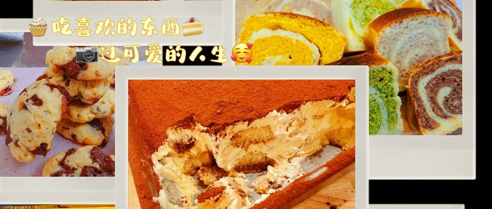

水星婆婆烘焙配方 - 清单200

一共200个方子，所以叫 "清单200"
各 种 饼 干（26）
曲奇饼干（11）
好 多 蛋 糕（60）
戚风蛋糕（7）
海绵蛋糕（2）
巧克力蛋糕（3+1）
乳酪蛋糕（8）
提拉米苏（4+1）
磅蛋糕（8）
蛋糕卷卷（10）
下午茶系列（18）
美 丽 面 包（41）
基础（14）
吐司（16）
欧包（8）
贝果（3）
花 式 月 饼（6）
早 餐 系 列（6）
小 小 甜 心（27）
巧克力（4）
糖（9）
酱酱酱酱（11）
其他甜甜（3）
雪 糕 （8）
饮 品（6）
聚会小食（4）
一些正餐（3）
其他（4）
你 需 要 的 教 程（9）
水 星 婆 婆 烘 焙 教 室 系 列
跟 着 书 本 做 烘 焙 系 列
跟着书本做烘焙之一 - 苹果磅蛋糕
Bars & Desserts
婆 婆 心 情
每个女人都应有自己的ME Time - 写在微信公众号粉丝破百之际
看了这么多世界的你，现在怎样了？- 写在微信粉丝公众号五百之际
“清单56” 2017年03月
“清单71” 2017年12月
“清单76” 2018年08月
“清单83” 2019年04月
“清单100” 2019年12月
“清单125” 2020年05月
“清单147” 2020年12月
“清单169” 2021年08月
“清单188” 2022年12月
“清单200” 2023年12月